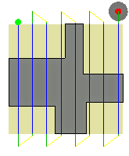

Transition lissée
Précise le type de connexion entre les passes.
Transition lissée |
Transition droite |
 |
Transition courte |
Aucun contact (non affiché): les passes ne sont pas connectées au même niveau Z. L'outil se retire entre chaque passe de connexion.